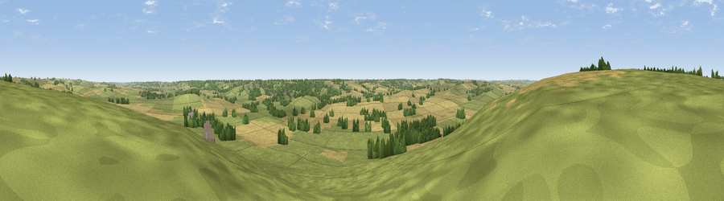

Viewpoint near Drayton
#27734 in England · top 19% of its area beats it · near DraytonThe view, rendered

A 360° render of this exact spot computed from the terrain model, tree cover and land cover — summer colours, afternoon light, calibrated against photographs of famous viewpoints. Real trees, hedges and buildings will differ in detail.
The panorama
Grey silhouette: terrain skyline in each direction (720 bearings, Earth curvature and refraction included). Dashed green: skyline with trees (+15 m) and buildings (+8 m) as obstacles. Blue strip: how far the ground is visible on each bearing.
Where the view opens
Wedge length = distance to the farthest visible ground on that bearing (vegetation-aware). Rings at 10, 25 and 50 km.
What fills the view
51% grassland · 39% cropland · 9% woodland ·
Angular shares of the visible panorama (visual magnitude), not map area. Landscape diversity 0.42 (0–1 Shannon).
Key numbers
More beautiful places nearby
The staircase of upgrades: each row has a higher view potential than everything closer. Driving times are estimates from straight-line distance, calibrated against real road routing — check an actual route before setting out.
| Place | Direction | Drive | Score |
|---|---|---|---|
| Viewpoint near Blaston | NW · 1 km | ~4 min | 47.2 |
| Viewpoint near Rockingham | E · 5 km | ~12 min | 48.7 |
| Viewpoint near East Norton | NNW · 9 km | ~17 min | 53.2 |
| Robin-a-Tiptoe Hill | NNW · 13 km | ~24 min | 54.6 |
| Whatborough Hill | NNW · 15 km | ~26 min | 57.1 |
| Viewpoint near Cold Newton | NW · 16 km | ~29 min | 57.3 |
| Viewpoint near Burrough on the Hill | NNW · 21 km | ~35 min | 66.0 |
| Old John | WNW · 35 km | ~53 min | 70.3 |
52.52308, -0.79174 · source: screening · position refined by local search. Computed location — check access rights before visiting.